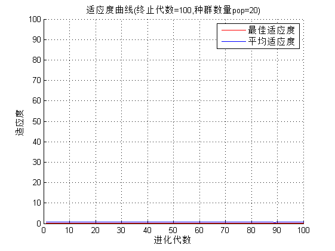

gaSVMcgForRegress_test
clear
clc
load wine;
train = [wine(1:30,:);wine(60:95,:);wine(131:153,:)];
train_label = [wine_labels(1:30);wine_labels(60:95);wine_labels(131:153)];
test = [wine(31:59,:);wine(96:130,:);wine(154:178,:)];
test_label = [wine_labels(31:59);wine_labels(96:130);wine_labels(154:178)];
[train,pstrain] = mapminmax(train');
pstrain.ymin = 0;
pstrain.ymax = 1;
[train,pstrain] = mapminmax(train,pstrain);
[test,pstest] = mapminmax(test');
pstest.ymin = 0;
pstest.ymax = 1;
[test,pstest] = mapminmax(test,pstest);
train = train';
test = test';
tic;
ga_option.maxgen = 100;
ga_option.sizepop = 20;
ga_option.pCrossover = 0.4;
ga_option.pMutation = 0.01;
ga_option.cbound = [0.1,100];
ga_option.gbound = [0.01,100];
ga_option.v = 3;
[bestCVmse,bestc,bestg,ga_option] = gaSVMcgForRegress(train_label,train,ga_option);
bestc
bestg
bestCVmse
cmd = ['-c ',num2str(bestc),' -g ',num2str(bestg),' -s 3 -p 0.1'];
model = svmtrain(train_label,train,cmd);
[pretrain,trainacc] = svmpredict(train_label,train,model);
[pretest,testacc] = svmpredict(test_label,test,model);
toc;
bestc =
18.5214
bestg =
1.4931
bestCVmse =
0.0712
Mean squared error = 0.00668585 (regression)
Squared correlation coefficient = 0.989885 (regression)
Mean squared error = 0.0580003 (regression)
Squared correlation coefficient = 0.926455 (regression)
Elapsed time is 31.243920 seconds.
